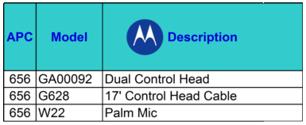
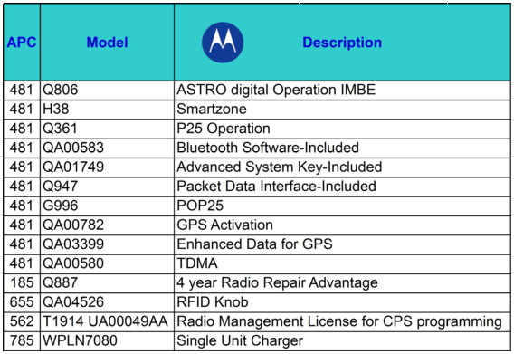
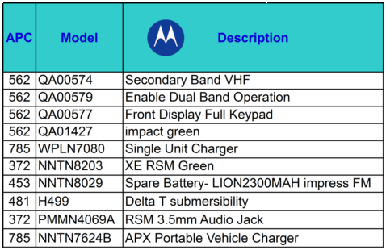
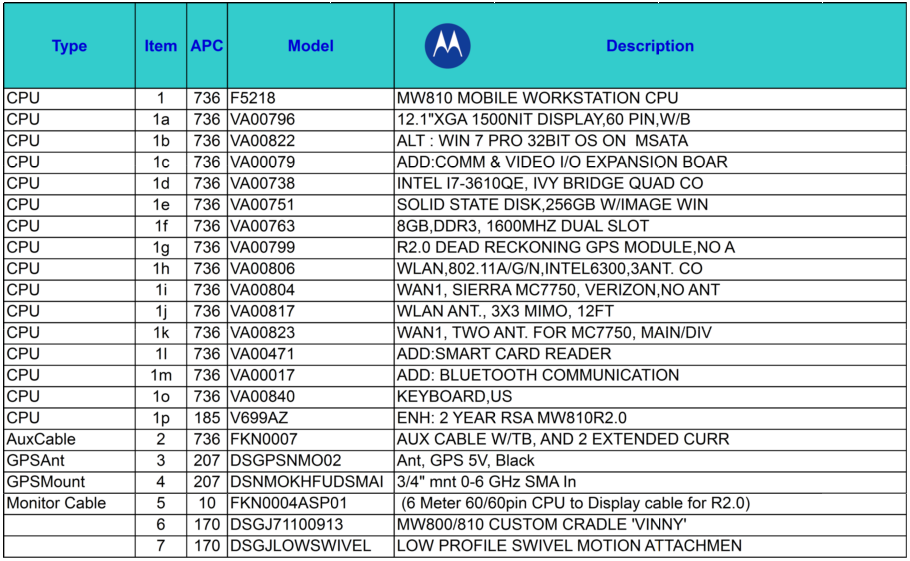
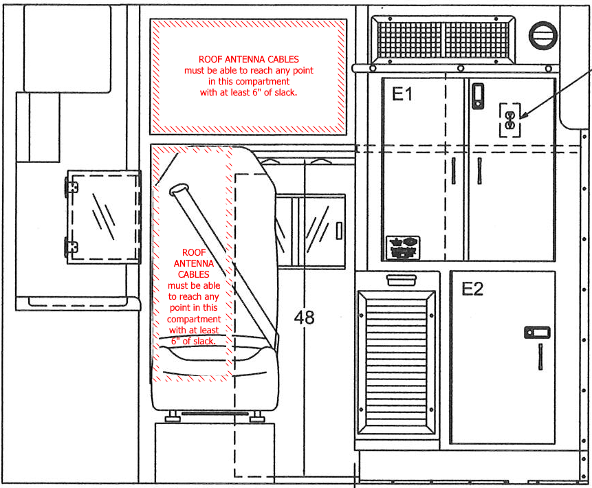

VIRGINIA BEACH EMS DEPARTMENT
TECHNICAL ASSET SYSTEM INTEGRATION REQUIREMENTS
(TASIR)
$Revision: 3802 $
1 Introduction
In so far as each of the Department’s volunteer rescue squads desires to operate its own technical assets (ambulances, duty radios, etc) in the Virginia Beach EMS system, there exists a need to integrate those assets with municipal and regional infrastructure and processes. This document, along with any documents it references, specifies requirements for such integration.
1.1 Desired state
This document is written with the following high-level goals in mind:
-
System integration concerns are defined before a procurement begins, and are raised at initiation of the procurement process.
-
Such definitions are composed of:
-
Written words
-
Charts
-
Drawings
-
Pictures
-
Compliance with these requirements is verified prior to an asset being ordered.
1.2 Continuous process
This document is a work product intended to serve as the “hub” of a dynamic “hub-and-spoke” process driven by progress. The “spokes” of the process include:
1.2.1 Identification of control points in the procurement process
Control points are opportunities to assess compliance with requirements and to address any discrepancies. Currently-identified control points include when:
-
A squad becomes interested in procuring a technical asset
-
A squad submits a grant application for DEMS or state approval
-
A squad submits a loan application for DEMS or city approval
-
A squad finishes a purchase or build order, and is ready to sign a contract
-
A squad performs an end-of-assembly inspection, or takes delivery of a technical asset
-
A squad submits an asset for integration into the Virginia Beach EMS system
-
An asset gets refurbished, rechassied, recapitalized, etc
-
The city budget planning process begins
The Department and the squad should review this document together at each control point to assess ongoing compliance with requirements.
1.2.2 Identification of Subject Matter Experts (SMEs)
This document is only as legitimate as the endorsements it receives from the appropriate authoritative personnel. As personnel move in, out, and across the workforce and the market, it is important that the Department review this document to assure that its references to, and endorsements from, SMEs are current, correct, and complete.
1.2.3 Interviews with SMEs
The Department should conduct periodic interviews with identified SMEs to review the contents of this document, and to gather:
-
New, changed, or obsolete requirements
-
Supporting artifacts to include explicitly or by reference
1.2.4 Endorsements from SMEs
The Department should make sure that it gets an explicit endorsement from the appropriate SME for every set of integration requirements for a given system or subsystem. Such endorsements should be in writing and should be attached or otherwise made available with this document.
1.2.5 Advocacy for SMEs at appropriate control points
The Department should take at least each control point as an opportunity to raise stakeholder awareness of SME concerns. The Department acknowledges that the SMEs are not responsible for directly communicating new, changed, or obsoleted requirements directly to the squads, nor are the squads responsible for making direct inquiries to the SMEs. Rather, the SMEs are responsible for communicating changes to the Department, and the Department is responsible for communicating that information to the squads via this document (see
1.1↑).
2 Business cycles and processes
2.1 Squad procurement cycle
Squad coordinators who are responsible for technical asset procurement should perform most or all of the following “cradle to grave” tasks:
-
Recognize the need to procure an asset.
-
Ensure adequate squad funds are budgeted (also see section 2.2↓).
-
Develop full specifications using this document as a guide.
-
Solicit quotes, bids, or proposals.
-
Issue a purchase order or sign a contract according to squad business rules.
-
Make sure payments are processed in a timely manner.
-
Ensure contract performance (inspect asset thoroughly using specifications and build order as guides).
-
For ops assets, turn asset over to ops staff for full commissioning.
-
Determine well ahead of time when an asset will no longer be of use or value.
-
For ops assets, receive decommissioned asset from ops staff.
-
Remove and reallocate useful sub-components (ie, EMS gear, radios, computers, dashcams, power load systems, etc, for a vehicle).
-
Remove highly conspicuous squad markings as necessary.
-
Initiate final sale or disposal process.
2.2 City budget process
This document is primarily intended to define requirements for integrating squad-owned technical assets into city infrastructure, but in some cases a squad must consider city budgetary issues. For example, in the traditional arrangement for adding an ambulance to the VB EMS fleet, the EMS Department must seek and receive approval to pay for additional fuel, maintenance, city-supplied medical gear, etc. The timeline for this process is enforced by the Budget & Management Services Department, the City Manager, and City Council – not by the EMS Department.
Each budget cycle begins more than nine months before the budget becomes effective and generally proceeds as follows:
September
Headquarters chiefs solicit input from staff on budget needs.
October
Management Services provides the Department with “target” budget figure based on projected revenues, known obligations and other factors as determined by city leaders.
November
Department prepares a two-level request: One that does not exceed the “target” amount, and one that identifies other needs that would exceed the “target”.
December
Department submits its two-level request to Management Services.
January
Department negotiates its request with City Manager and his deputies.
February
Management Services reconciles outstanding issues with the Department.
March
Department presents its request to City Council.
April
EMS Chief negotiates its request with City Council and public hearings area held.
May
City Council finalizes the budget for the coming fiscal year.
July
Department begins spending from approved budget.
3 SPECIFICATIONS
3.1 VB911-related radios and mobile data terminals
3.1.1 Mobile (vehicle-mounted) radios
To integrate into the VB911 system, a mobile radio must have the following attributes:
Mobile radios in ambulances (or other vehicles with a secondary communications area) must also have the following attributes:

3.1.2 Portable (handheld) radios
To integrate into the VB911 system, a portable radio must be a Motorola APX Series P25 700/800 MHz band model with the following attributes:

A portable radio may include the following attributes:

Other options may be allowable upon approval of the SME for VB911-related radio and mobile data terminal purchase specifications.
3.1.3 Mobile data terminals
To integrate into the VB911 system, a mobile data terminal (MDT) must have the following attributes:

Because an MDT in a vehicle must be able to receive messages when the vehicle is off (unless voltage drop would risk preventing the vehicle from being started), all MDTs installed in vehicles must draw primary power from the following component, which must draw its power from the OEM unswitched battery circuit:
-
ACDC Industries MZL-180 voltage-sensing delay timer
3.1.4 Vehicle antenna placement
To integrate into the VB911 system, a vehicle must have antennas mounted according to sound radio engineering principles. For instance, a vehicle equipped with an approved mobile radio and an approved MDT will have exterior antennas mounted something like this:
3.1.5 Antenna cable termination points
To integrate into the VB911 system, an ambulance must be equipped with antenna cables that terminate as follows:

3.1.6 Component mounting and power source chart
To integrate into the VB EMS system, VB911-related radio and MDT equipment must be mounted and supplied with power according to the following chart:
3.2 Chassis, engine, and drivetrain selection
To integrate into the VB EMS system, a new or rechassied ambulance must use one of the following combinations:
-
Ford E-450 with V-10 gasoline engine
-
Dodge 5500 with 6.7L Cummins diesel engine and AISIN heavy-duty 6-speed transmission (new orders will only be approved after city garage confirmation that adequate local repair facilities exist)
-
Freightliner M2 with 6.7L Cummins diesel engine and Allison transmission
To qualify for using fuel supplied by the Public Works Department, a vehicle must run on one of the following fuels:
-
ULTRA-LOW-SULFUR DIESEL
-
REGULAR UNLEADED GASOLINE
3.4 Traffic preemption systems
To integrate into the city’s traffic preemption system, the following requirements must be met:
-
The vehicle must be equipped with an OPTICOM INFRARED emitter, although for compatibility reasons the visible light blocking filter is discouraged.
-
The emitter must only be active when the vehicle’s transmission is in DRIVE and the emergency lights are on.
3.5 Garage space, vehicle aprons, structural additions and modifications
-
To fit inside all VB EMS stations, a vehicle (including protruding items such as mirrors and antennas) must be less than:
-
118”, which is 9’10”, in HEIGHT (a limitation of the Thalia station)
-
142”, which is 11’10”, in WIDTH (a limitation of the Plaza station)
-
180”, which is 15’, in LENGTH (an approximate limitation of the Thalia station)
-
The Department may impose weight restrictions on heavy vehicles to avoid damage to station aprons, etc.
-
A squad must receive approval from both the EMS Department and the Public Works Department Buildings Division before making any substantial additions or modifications to city-owned buildings.
-
The sole authorities for negotiating the use of city-owned building space between the EMS and Fire Departments are the EMS Chief and the Fire Chief. Personnel at lower levels of authority are not authorized to alter existing arrangements. Similar rules shall apply if space is shared between EMS and any other city departments.
3.6 Roadway dimensions and load limits
-
The most limiting bridge that a VB EMS unit may reasonably be expected to cross is the North Landing Bridge on Route 165 (North Landing Road) at the Virginia Beach / Chesapeake city line, which has a weight limit of 13 tons, which is 26,000 pounds. Although emergency vehicles may be exempt from weight restrictions according to state law, a squad must receive approval from both the EMS Department and the Public Works Transportation Division before procuring a vehicle that would exceed the weight limit of the North Landing Bridge.
-
Squads procuring heavy or oversize vehicles should be familiar with Part A Section 5 of the Planning Department Permits & Inspections Division Moving and Hauling Manual, and the Public Works Department Operations Division’s Blanket Permit Requirements Memo and Blanket Permit Hauling Map.
3.7 Regional Drug and IV Box System
If a vehicle is, according to the EMS Department, an addition to the fleet (as opposed to a replacement), and it should carry a regional IV box and a regional drug box, the vehicle owner must arrange to buy double the quantity of IV and drug boxes that will be kept on the vehicle. Half of the procured boxes will be kept on the vehicle. The other half will be kept in standby inventory in the hospital pharmacy system.
Regional IV and drug boxes shall be bought through the regional EMS council.
4 Endorsements
Endorsed as to correctness and completeness:
-
SME for VB911-related radio and mobile data terminal purchase specifications:
X
Date:
Neil Kunzler, Senior Account Manager
Government & Public Safety Mobility
Motorola Solutions Inc.
1289 Holly Point Rd
Virginia Beach VA 23454
tel:757-481-6096
tel:757-377-5374 (cell)
fax:757-412-0776
Neil.Kunzler@motorolasolutions.com
-
SME for VB911-related radio and mobile data terminal installation and maintenance:
X
Date:
Marc St Clair, Systems Engineer
ECCS Network Support
Telecommunications Area
ComIT Department
mstclair@vbgov.com
-
SME for selection, maintenance, and repair of vehicle chassis, drivetrain, suspension, engine accessories, and roadworthiness features:
X
Date:
Reggie Padgett, Fleet Manager
Automotive Services Division
Public Works Department
tel:757-385-1925
rpadgett@vbgov.com
-
SME for fuel:
X
Date:
Reggie Padgett, Fleet Manager
Automotive Services Division
Public Works Department
tel:757-385-1925
rpadgett@vbgov.com
-
SME for garage space, vehicle aprons, and structural additions and modifications:
X
Date:
Barry Shockley, Facilities Manager
Buildings Division
Public Works
tel:757-385-8558
bshockle@vbgov.com
-
SME for traffic signal preemption:
X
Date:
Brian Proctor, Civil Engineer
Traffic Engineering Division
Public Works
tel:757-385-4387
bproctor@vbgov.com
-
SME for roadway dimensions and load limits:
X
Date:
?
Transportation Division
Public Works
-
SME for regional IV and drug box program:
X
Date:
David Coulling, Regional Field Coordinator
Tidewater EMS Council
tel:757-963-2325
coulling@vaems.org